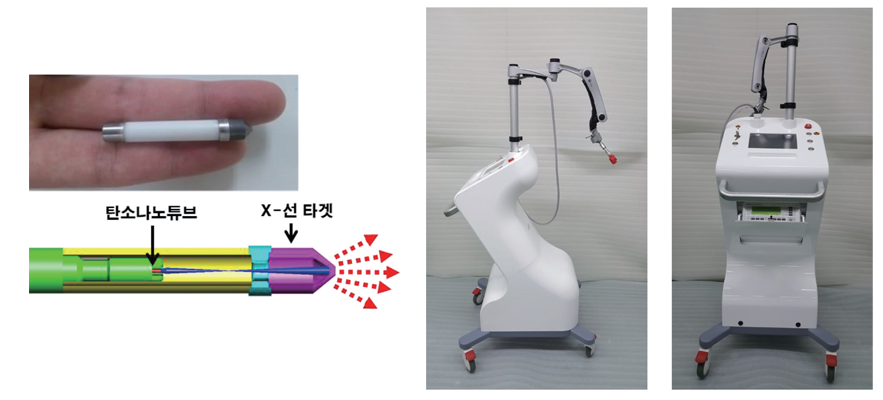

KAIST Top 10
KAIST Top 10
KAIST RESEARCH ACHIEVEMENTS
Development of Miniaturized X-ray Tube based on Carbon Nanotube and Electronic Brachytherapy Device
Department of Nuclear & Quantum Engineering
Sung Oh Cho
Summary
A novel vacuum-sealed miniature X-ray tube based on a carbon nanotube field emitter was developed for the first time, and with it, an electronic cancer brachytherapy device that can be used at a commercial level was developed. The miniature X-ray tube has a diameter of 5 mm. Due to its small diameter, the tube can be inserted into a body or placed on the surface of a body to treat various cancers, such as skin cancer, esophageal cancer, bronchial cancer, uterine cancer, rectal cancer, and pancreatic cancer. When compared to conventional radiotherapy devices, which are based on large linear accelerators, the developed device offers several advantages by delivering minimal damage to normal cells and reducing the cost and the device size down to one-twentieth and one-tenth of those of existing technology, respectively. Consequently, radiotherapy devices, which are currently only available in large general hospitals, can be distributed to small and medium-sized hospitals, opening the way for more affordable and simpler cancer treatments with fewer side effects for patients
Background
Conventional procedures for cancer treatment include surgery and chemotherapy. With surgery, patients face the inevitable loss of organs and hospitalization, while with chemotherapy, they must endure side effects. Such disadvantages posed by conventional treatment procedures can be overcome by the application of radiotherapy. Currently, the most prominent form of radiotherapy involves the use of linear accelerators that generate high energy radiation from outside the body, which then enters the body of the patient to treat cancer. However, due to the high energy possessed by the entering radiation, damage is inflicted upon not only cancer cells, but also healthy normal cells, causing side effects to patients. In contrast, the use of brachytherapy cancer treatment equipment minimizes damage to healthy normal cells by applying miniature X-ray tubes to approach the targeted cancer region by either entering the body of the patient with the tube or by keeping the tube near the skin if the cancer is dermal in nature.
Brachytherapy cancer therapy equipment based on miniature X-ray tubes has been developed in the United States and Germany. However, as these tubes are based on thermionic emission, they use filaments that are heated, causing the tubes to have a lifespan of no longer than 10 h, poor operation stability, and very limited use in cancer treatment. Consequently, there is a need for a new brachytherapy cancer treatment equipment that can overcome all of the aforementioned shortcomings based on a field emission source do not require heating, allowing the X-ray tubes to operate with a long lifespan and be fabricated to have small sizes. The diameter of the developed X-ray tube is 5 mm and the length can be adjusted to suit the treatment purpose (Figure 1). Furthermore, as the developed technology can overcome high-voltage discharge, which has been the biggest issue in utilizing CNT-based X-ray tubes, the stability of the developed X-ray tubes was drastically enhanced, allowing the tubes to have a lifespan of over 500 h. However, to apply the X-ray tubes to treat cancer, an applicator that regulates the spatial dose distribution of the generated X-rays needs to be developed and implemented. Thus, using a 3D printer, we designed and fabricated surface applicators for treating skin cancer, pancreatic cancer, and keloids, and cylindrical applicators for treating uterine cancer, rectal cancer, and breast cancer. Utilizing both the fabricated miniature X-ray tubes and applicators, we developed a novel brachytherapy cancer treatment device that can be applied commercially (Figure 2). The entire system, its components, and the main software were developed in consultation with radiation oncology professors and medical device certification advisors to satisfy the requirements for practical use in hospitals and for receiving medical device certification. The device was built to be operated using the built-in touch screen or an external PC. In addition, the device is capable of measuring radiation doses in real-time and was designed to be operational only when radiation safety is ensured.

Expected effect
Radiation therapy equipment using conventional linear accelerators is expensive, costing over 5 billion Won. In addition, such equipment requires a large installation space, allowing it to only be available in large general hospitals. In contrast, the brachytherapy cancer treatment device developed in this study is 20 ~30 times cheaper compared to its conventional counterparts, and it is small in size, allowing the device to be installed not only in large hospitals but also in smaller local hospitals. In addition, as previously mentioned, cancer can be treated with minimal damage to healthy normal cells using the developed device. Thus, if implemented, cancer patients will be able to receive affordable cancer treatment with little side effects. The implementation of the developed technology will also encourage the development of even newer cancer treatment procedures that are superior to conventional radiation therapy
Research Outcomes
[Paper 1] Hyun Nam Kim, Ju Hyuk. Lee, Han Beom Park, Sung Oh Cho, “Surface applicator of a miniature X-ray tube for superficial electronic brachytherapy of skin cancer, Medical Physics 45, 29-36 (2018)
[Paper 2] Han Beom Park, Hyun Nam Kim, Ju Hyuck Lee, Ik Jae Lee, Sung Oh Cho, “Dosimetric characterization and commissioning of a superficial electronic brachytherapy device for skin cancer treatment”, Nuclear Engineering and Technology 50, 937-943 (2018)
[Patent 1] Sung Oh Cho, Hyun Jin Kim, Hyun Nam Kim, Han Beom Park, “X-ray Brachytherapy System Using X-ray Tube Based on Carbon Nanotube for Keloid and Skin Cancer Treatment”, No: 10-1837593-0000, Registration Date: 2018. 3. 6
[Patent 2] Sung Oh Cho, Hyun Jin Kim, Hyun Nam Kim, Han Beom Park, “X-ray Tube System Using X-ray Tube Based on Carbon Nanotube for Keloid and Skin Cancer Treatment X-ray Brachytherapy Apparatus”, No: 10-1837599-0000, Registration Date: 2018. 3. 6
[Press release] YTN news report, TJB news report, Daejeon CBS interview report, Yonhap news report, and other daily news reports (33 total reports) (2018.11. 22 ~ 11. 29)
[Technology Transfer] Performance relating to developed medical device prior to 2017 (2009~2017) 9 journal papers, 2 international patents, 11 domestic patents, 1 technology transfer case (165,000,000 Won + Running Royalty 2% + Development Cost 50,000,000 Won)